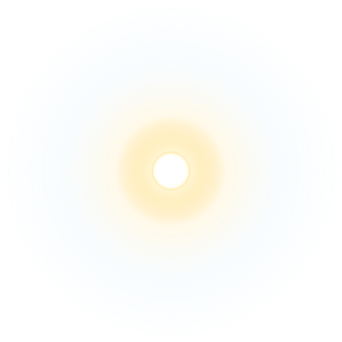

Workspace
›
Celestial Daylight
GPT-4o Mini
☀️
A brighter space to think, create and explore.
Experience a serene daylight workspace with natural sunlight, volumetric rays, and soft drifting clouds that elevate focus and calm.
✨ Pure Ambient Sky
Multi-stop gradient derived from Rayleigh scattering with subtle solar bloom.
☁️ 3-Tier Canopy
Mathematical Fourier periodic clouds with 100% seamless duplicated looping.
🎯 Safe Corridor
Flank-focused cloud mass preserves WCAG contrast in central reading zones.
Ask anything or start creating...